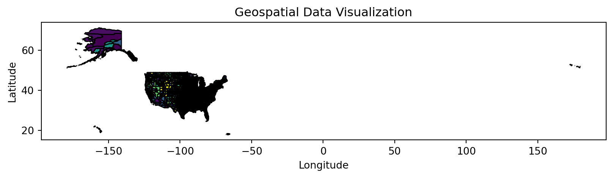

import pandas as pd
import os
import geopandas as gpd
import matplotlib.pyplot as pltFinal Project (Group 14)
Import Packages
Import Illegal Pets Data and Education Attainment Data in NYC
# Illegal Pets Data
illegal_pets = pd.read_csv("Illegal Pets/illegal_animals_kept_as_pets_20241116.csv")
# Education Attainment Data
education = pd.read_csv("Education Attainment/ACSST5Y2010.S1501-Data.csv")Combine all education data from 2010 to 2022
import pandas as pd
import os
# Directory where all CSV files are stored
directory = "Education Attainment"
# Collect all file paths in the directory that match the naming pattern
csv_files = [os.path.join(directory, file) for file in os.listdir(directory) if file.endswith(".csv")]
# List to hold individual DataFrames
dataframes = []
# Loop through each file, read it into a DataFrame, and append it to the list
for file in csv_files:
# Extract the year from the file name (e.g., "ACSST5Y2010" -> "2010")
year = os.path.basename(file).split("ACSST5Y")[1][:4]
# Read the CSV into a DataFrame
df = pd.read_csv(file)
# Add a new column 'year' with the extracted year
df['YEAR'] = year
# Append the modified DataFrame to the list
dataframes.append(df)
# Concatenate all DataFrames into one
combined_df = pd.concat(dataframes, ignore_index=True)
# Sort the combined DataFrame by 'GEO_ID' in descending order
sorted_df = combined_df.sort_values(by='GEO_ID', ascending=False)Anayze meanings of variables
Each year’s dataset’s variable has different interpretation, so it it critical to firstly select the most relevant variable for futher analysis. In our project, we only select total estimate to simplify our anlysis without considering gender and earning. For example, S1501_C01_015’s definition has changed in 2018 from ‘percent of bachelor degree or higher’ to ‘total population of bachelor degreee or higher.’ Thus, we have to manually clean these messy variables.
# Select the top 13 rows (containing each years variable definition) to analyze vairbales meaning
top_13_rows = sorted_df.head(13)
# Identify columns where any cell contains "female", "male", or "margin"
columns_to_drop = top_13_rows.columns[
top_13_rows.apply(lambda col: col.astype(str).str.contains(r"female|male|margin|nan|earning|race", case=False, na=False).any())
]
# Drop the identified columns
top_13_rows_f = top_13_rows.drop(columns=columns_to_drop)
top_13_rows_f = top_13_rows_f.dropna(axis=1, how='all')Select necessery variables
# Cleaning Education Attainment Data
# Rename selected columns for better readability
column_rename_map = {
"GEO_ID": "geo_id", # Geographic identifier
"NAME": "area_name", # Geographic area name
"YEAR": "year", # Year of data
"S1501_C01_001E": "total_population", # Total population
"S1501_C01_006E": "pop_25_plus", # Population 25 years and over
"S1501_C01_007E": "pop_25_less_9th", # 25 years and over: Less than 9th grade
"S1501_C01_009E": "pop_25_hs_grad", # 25 years and over: High school graduate
"S1501_C01_013E": "pop_25_bach_plus", # 25 years and over: Bachelor's degree or higher
"S1501_C01_017E": "pop_25_34", # Population 25 to 34 years
"S1501_C01_019E": "pop_25_34_bach_plus", # 25-34: Bachelor's degree or higher
"S1501_C01_021E": "pop_45_64_bach_plus" # 45-64: Bachelor's degree or higher
}
# Create selected_columns based on column_rename_map keys
selected_columns = list(column_rename_map.keys())
# Filter the combined DataFrame to only keep the selected columns
filtered_df = combined_df[selected_columns]
# Rename the columns
filtered_df.rename(columns=column_rename_map, inplace=True)
# Remove rows where GEO_ID equals "Geographic Area Name"
edu_cleaned = filtered_df[filtered_df["geo_id"] != "Geographic Area Name"]
# Save the cleaned data to a CSV file
output_path = 'edu_cleaned.csv'
edu_cleaned.to_csv(output_path, index=False)
print(f"Cleaned education data saved to {output_path}")
# Cleaning Illegal Pets Data
# List of columns to drop
columns_to_drop = [
'Agency', 'Agency Name', 'Complaint Type', 'Cross Street 1', 'Cross Street 2',
'Intersection Street 1', 'Intersection Street 2', 'City', 'Landmark',
'Facility Type', 'Community Board', 'Park Facility Name', 'Vehicle Type',
'Taxi Company Borough', 'Taxi Pick Up Location', 'Bridge Highway Name',
'Bridge Highway Direction', 'Road Ramp', 'Bridge Highway Segment'
]
# Drop the specified columns
illegal_pets = illegal_pets.drop(columns=columns_to_drop, errors='ignore')Cleaned education data saved to edu_cleaned.csv/var/folders/k2/prgbv7z97knbd104r93pncfc0000gp/T/ipykernel_36186/2904843145.py:24: SettingWithCopyWarning:
A value is trying to be set on a copy of a slice from a DataFrame
See the caveats in the documentation: https://pandas.pydata.org/pandas-docs/stable/user_guide/indexing.html#returning-a-view-versus-a-copy
Standardization of County Name
# Exam unqiue values in both dataframes for furthern merging
print(edu_cleaned['area_name'].unique())
# Create county name list in NYC
nyc_counties = [
"New York County, New York", # Manhattan
"Kings County, New York", # Brooklyn
"Queens County, New York", # Queens
"Bronx County, New York", # The Bronx
"Richmond County, New York" # Staten Island
]
# Select counties in NYC and filter them
edu_nyc = edu_cleaned[edu_cleaned['area_name'].isin(nyc_counties)]
# Mapping of county names to simplified borough names
county_replacement_map = {
"New York County, New York": "New York",
"Kings County, New York": "Kings",
"Queens County, New York": "Queens",
"Bronx County, New York": "The Bronx",
"Richmond County, New York": "Staten Island"
}
# Replace county names in the 'name' column using the map
edu_nyc['area_name'] = edu_nyc['area_name'].replace(county_replacement_map)
# Exam unqiue values in both dataframes for furthern merging
print(illegal_pets['Borough'].unique())
# Mapping Borough
borough_to_county = {
"BROOKLYN": "Kings",
"STATEN ISLAND": "Staten Island",
"QUEENS": "Queens",
"MANHATTAN": "New York",
"BRONX": "The Bronx"
}
# Map the 'Borough' column to new 'County' values
illegal_pets['area_name'] = illegal_pets['Borough'].map(borough_to_county)
print(illegal_pets['area_name'].unique())
print(edu_nyc['area_name'].unique())['Geographic Area Name' 'New York' 'Albany County, New York'
'Allegany County, New York' 'Bronx County, New York'
'Broome County, New York' 'Cattaraugus County, New York'
'Cayuga County, New York' 'Chautauqua County, New York'
'Chemung County, New York' 'Chenango County, New York'
'Clinton County, New York' 'Columbia County, New York'
'Cortland County, New York' 'Delaware County, New York'
'Dutchess County, New York' 'Erie County, New York'
'Essex County, New York' 'Franklin County, New York'
'Fulton County, New York' 'Genesee County, New York'
'Greene County, New York' 'Hamilton County, New York'
'Herkimer County, New York' 'Jefferson County, New York'
'Kings County, New York' 'Lewis County, New York'
'Livingston County, New York' 'Madison County, New York'
'Monroe County, New York' 'Montgomery County, New York'
'Nassau County, New York' 'New York County, New York'
'Niagara County, New York' 'Oneida County, New York'
'Onondaga County, New York' 'Ontario County, New York'
'Orange County, New York' 'Orleans County, New York'
'Oswego County, New York' 'Otsego County, New York'
'Putnam County, New York' 'Queens County, New York'
'Rensselaer County, New York' 'Richmond County, New York'
'Rockland County, New York' 'St. Lawrence County, New York'
'Saratoga County, New York' 'Schenectady County, New York'
'Schoharie County, New York' 'Schuyler County, New York'
'Seneca County, New York' 'Steuben County, New York'
'Suffolk County, New York' 'Sullivan County, New York'
'Tioga County, New York' 'Tompkins County, New York'
'Ulster County, New York' 'Warren County, New York'
'Washington County, New York' 'Wayne County, New York'
'Westchester County, New York' 'Wyoming County, New York'
'Yates County, New York']
['BROOKLYN' 'STATEN ISLAND' 'QUEENS' 'MANHATTAN' 'BRONX']
['Kings' 'Staten Island' 'Queens' 'New York' 'The Bronx']
['The Bronx' 'Kings' 'New York' 'Queens' 'Staten Island']/var/folders/k2/prgbv7z97knbd104r93pncfc0000gp/T/ipykernel_36186/2301969997.py:26: SettingWithCopyWarning:
A value is trying to be set on a copy of a slice from a DataFrame.
Try using .loc[row_indexer,col_indexer] = value instead
See the caveats in the documentation: https://pandas.pydata.org/pandas-docs/stable/user_guide/indexing.html#returning-a-view-versus-a-copy
Standardization Time Variable
# Format both columns as strings
illegal_pets['year'] = pd.to_datetime(illegal_pets['Created Date'], errors='coerce').dt.strftime('%Y')
edu_nyc['year'] = pd.to_datetime(edu_nyc['year'], errors='coerce').dt.strftime('%Y')/var/folders/k2/prgbv7z97knbd104r93pncfc0000gp/T/ipykernel_36186/3968184602.py:2: UserWarning:
Could not infer format, so each element will be parsed individually, falling back to `dateutil`. To ensure parsing is consistent and as-expected, please specify a format.
/var/folders/k2/prgbv7z97knbd104r93pncfc0000gp/T/ipykernel_36186/3968184602.py:3: SettingWithCopyWarning:
A value is trying to be set on a copy of a slice from a DataFrame.
Try using .loc[row_indexer,col_indexer] = value instead
See the caveats in the documentation: https://pandas.pydata.org/pandas-docs/stable/user_guide/indexing.html#returning-a-view-versus-a-copy
Merging
# Drop 2023 and 2024 because education data does not includes these years
illegal_pets = illegal_pets[~illegal_pets['year'].isin(['2023', '2024'])]
# Merge based on year and area_name (County name)
merged_df = pd.merge(illegal_pets, edu_nyc, on=['year', 'area_name'], how='left')
print(merged_df.head()) Unique Key Created Date Closed Date Descriptor Location Type \
0 50293012 04/16/2021 08:11:36 AM NaN Rooster Residence
1 50959265 06/21/2021 08:22:44 PM NaN Other Residence
2 53173404 01/25/2022 02:59:43 AM NaN Rooster Residence
3 54820319 07/17/2022 09:46:58 AM NaN Rooster Residence
4 50293717 04/16/2021 08:05:30 AM NaN Rooster Residence
Incident Zip Incident Address Street Name Address Type \
0 11234.0 2733 MILL AVENUE MILL AVENUE ADDRESS
1 10314.0 SUFFOLK AVENUE SUFFOLK AVENUE BLOCKFACE
2 11385.0 59-29 PALMETTO STREET PALMETTO STREET ADDRESS
3 11367.0 144-18 MELBOURNE AVENUE MELBOURNE AVENUE ADDRESS
4 11234.0 2739 MILL AVENUE MILL AVENUE ADDRESS
Status ... year geo_id total_population pop_25_plus \
0 In Progress ... 2021 0500000US36047 213570 1876692
1 In Progress ... 2021 0500000US36085 40471 344389
2 In Progress ... 2022 0500000US36081 181201 1709759
3 In Progress ... 2022 0500000US36081 181201 1709759
4 In Progress ... 2021 0500000US36047 213570 1876692
pop_25_less_9th pop_25_hs_grad pop_25_bach_plus pop_25_34 \
0 158254 473782 298611 448859
1 17431 102905 47218 60751
2 174351 444621 229323 336497
3 174351 444621 229323 336497
4 158254 473782 298611 448859
pop_25_34_bach_plus pop_45_64_bach_plus
0 383827 184895
1 61972 27572
2 323773 132332
3 323773 132332
4 383827 184895
[5 rows x 31 columns]Adding ZIP code
# Load the shapefile
shapefile_path = 'gz_2010_us_050_00_5m/gz_2010_us_050_00_5m.shp'
gdf = gpd.read_file(shapefile_path)
# List of GEO_IDs for NYC counties
nyc_geo_ids = ["0500000US36005", "0500000US36047", "0500000US36061", "0500000US36081", "0500000US36085"]
# Filter the GeoDataFrame
nyc_gdf = gdf[gdf["GEO_ID"].isin(nyc_geo_ids)]
# Display the result
print(nyc_gdf)
# Perform the merge
nyc_gdf.rename(columns={"GEO_ID": "geo_id"}, inplace=True)
result_gdf = nyc_gdf.merge(merged_df, on="geo_id", how="inner")
# Display the merged GeoDataFrame
print(result_gdf) GEO_ID STATE COUNTY NAME LSAD CENSUSAREA \
2031 0500000US36005 36 005 Bronx County 42.096
2089 0500000US36047 36 047 Kings County 70.816
2094 0500000US36061 36 061 New York County 22.829
2136 0500000US36081 36 081 Queens County 108.532
2138 0500000US36085 36 085 Richmond County 58.370
geometry
2031 MULTIPOLYGON (((-73.77336 40.85945, -73.77055 ...
2089 POLYGON ((-73.9628 40.73767, -73.96119 40.7370...
2094 MULTIPOLYGON (((-74.04086 40.70012, -74.04002 ...
2136 POLYGON ((-73.89981 40.79252, -73.8922 40.7903...
2138 POLYGON ((-74.14443 40.53516, -74.1487 40.5344...
geo_id STATE COUNTY NAME LSAD CENSUSAREA \
0 0500000US36005 36 005 Bronx County 42.096
1 0500000US36005 36 005 Bronx County 42.096
2 0500000US36005 36 005 Bronx County 42.096
3 0500000US36005 36 005 Bronx County 42.096
4 0500000US36005 36 005 Bronx County 42.096
... ... ... ... ... ... ...
3941 0500000US36085 36 085 Richmond County 58.370
3942 0500000US36085 36 085 Richmond County 58.370
3943 0500000US36085 36 085 Richmond County 58.370
3944 0500000US36085 36 085 Richmond County 58.370
3945 0500000US36085 36 085 Richmond County 58.370
geometry Unique Key \
0 MULTIPOLYGON (((-73.77336 40.85945, -73.77055 ... 15715199
1 MULTIPOLYGON (((-73.77336 40.85945, -73.77055 ... 15723395
2 MULTIPOLYGON (((-73.77336 40.85945, -73.77055 ... 15730232
3 MULTIPOLYGON (((-73.77336 40.85945, -73.77055 ... 15752480
4 MULTIPOLYGON (((-73.77336 40.85945, -73.77055 ... 16146221
... ... ...
3941 POLYGON ((-74.14443 40.53516, -74.1487 40.5344... 55745721
3942 POLYGON ((-74.14443 40.53516, -74.1487 40.5344... 55786317
3943 POLYGON ((-74.14443 40.53516, -74.1487 40.5344... 55873108
3944 POLYGON ((-74.14443 40.53516, -74.1487 40.5344... 55931798
3945 POLYGON ((-74.14443 40.53516, -74.1487 40.5344... 56253746
Created Date Closed Date ... area_name \
0 01/12/2010 08:20:26 PM 01/13/2010 10:01:25 AM ... The Bronx
1 01/13/2010 10:50:37 AM 02/01/2010 11:03:50 AM ... The Bronx
2 01/14/2010 08:56:56 AM 02/01/2010 01:47:06 PM ... The Bronx
3 01/18/2010 11:37:00 AM 02/03/2010 01:34:20 PM ... The Bronx
4 03/05/2010 01:27:05 PM 03/05/2010 02:08:50 PM ... The Bronx
... ... ... ... ...
3941 10/19/2022 11:48:57 AM 10/19/2022 11:48:57 AM ... Staten Island
3942 10/23/2022 09:11:48 AM 10/23/2022 09:11:48 AM ... Staten Island
3943 11/02/2022 02:01:19 PM 11/02/2022 02:01:19 PM ... Staten Island
3944 11/08/2022 12:46:40 PM NaN ... Staten Island
3945 12/14/2022 07:31:19 AM 12/14/2022 07:31:19 AM ... Staten Island
year total_population pop_25_plus pop_25_less_9th pop_25_hs_grad \
0 2010 153214 840009 15.3 28.3
1 2010 153214 840009 15.3 28.3
2 2010 153214 840009 15.3 28.3
3 2010 153214 840009 15.3 28.3
4 2010 153214 840009 15.3 28.3
... ... ... ... ... ...
3941 2022 41539 344639 17969 102409
3942 2022 41539 344639 17969 102409
3943 2022 41539 344639 17969 102409
3944 2022 41539 344639 17969 102409
3945 2022 41539 344639 17969 102409
pop_25_bach_plus pop_25_34 pop_25_34_bach_plus pop_45_64_bach_plus
0 6.5 76.0 191951 18.8
1 6.5 76.0 191951 18.8
2 6.5 76.0 191951 18.8
3 6.5 76.0 191951 18.8
4 6.5 76.0 191951 18.8
... ... ... ... ...
3941 48927 60975 62109 27760
3942 48927 60975 62109 27760
3943 48927 60975 62109 27760
3944 48927 60975 62109 27760
3945 48927 60975 62109 27760
[3946 rows x 37 columns]/var/folders/k2/prgbv7z97knbd104r93pncfc0000gp/T/ipykernel_36186/1499606736.py:15: SettingWithCopyWarning:
A value is trying to be set on a copy of a slice from a DataFrame
See the caveats in the documentation: https://pandas.pydata.org/pandas-docs/stable/user_guide/indexing.html#returning-a-view-versus-a-copy
For final df name (merging education attainment, illegal pets, and county shp data), please refer to ‘result_gdf’
# Plotting the GeoDataFrame
gdf.plot(figsize=(10, 10), edgecolor="black", cmap="viridis")
plt.title("Geospatial Data Visualization")
plt.xlabel("Longitude")
plt.ylabel("Latitude")
plt.show()